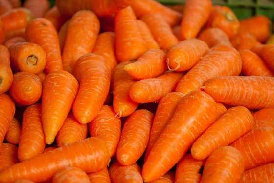
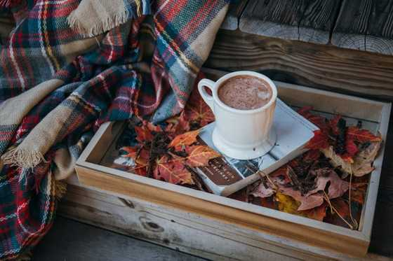
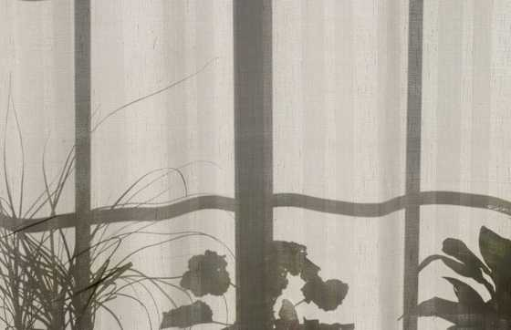
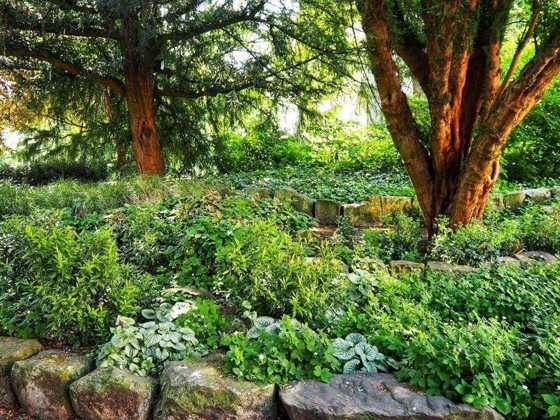

Cafe Domanite / 山梨県笛吹市芦川町
縁側と土間のある古民家で、
一杯のエスプレッソと、土地の味を。
山あいの古民家カフェ。地産地消のこだわりランチと、美味しいエスプレッソをご用意しています。
MENU
メニュー
Instagramのプロフィールでは、「美味しいエスプレッソと地産地消のこだわりランチ」と紹介されています。
| ランチ | 地産地消のこだわりランチ。内容・価格は準備中です。 |
|---|---|
| ドリンク | エスプレッソ。その他の品書き・価格は準備中です。 |
| 営業時間 | 準備中 |
| 定休日 | 準備中 |
| 電話 | 準備中 |
最新の営業状況はInstagramでご確認ください。


ABOUT
お店について
カフェ・ドマニテは、山梨県笛吹市芦川町にある古民家カフェです。Instagramのプロフィールには、河口湖から車で約15分の場所にあることが記されています。
- 古民家カフェ
- 縁側・土間スペース
- 犬連れOK
- エスプレッソ
- 地産地消のランチ
縁側や土間でくつろげること、犬と一緒に訪れられることが、お店の特徴として紹介されています。このページは、その雰囲気を「ゆっくり流れる山あいの時間」として表現した制作側のイメージです。
店名の意味は確認できていないため、ここでは触れていません。









掲載写真はフリー素材のイメージで、店舗の実際の様子ではありません。他地域で撮影されたもの、撮影地が不明なものを含みます。縮小などの加工をしています。
VOICE
口コミ(イメージ例)
以下は制作側が作成した創作のイメージです。実際のお客様の声ではありません。
イメージ例縁側に腰かけて飲むエスプレッソが、ゆっくり落ち着く時間をくれました。
イメージ例地元の野菜を使ったランチは、素材の味がよく分かる優しい味わいでした。
イメージ例犬を連れて入れるので、家族みんなで山あいのドライブの途中に立ち寄れました。